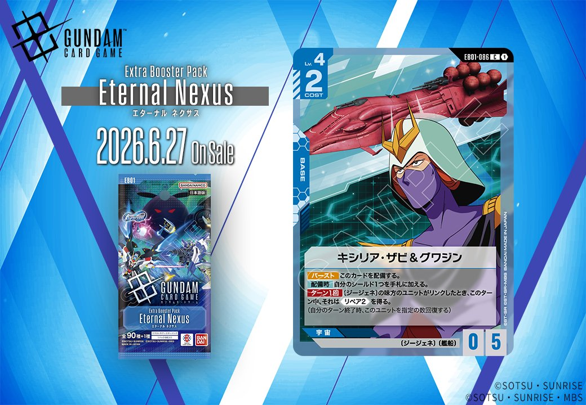

2026年6月27日発売の拡張パック「Eternal Nexus（エターナル ネクサス）」から、青のBASE「キシリア・ザビ & グワジン」、特徴にジージェネを持つPILOTとリンク可能な青のUNIT「ガンダムデルタカイ」、白のCOMMAND「30cm砲(APFSDS弾)」の計3枚が収録されます。

キシリア・ザビ & グワジン (EB01-086)
| 色 | 青 | タイプ | BASE |
| Lv | 4 | コスト | 2 |
| AP | 0 | HP | 5 |
| 特徴 | 〔ジージェネ〕、〔艦船〕 | ||
効果: 【バースト】 このカードを配備する。【配備時】 自分のシールド1つを手札に加える。ターン1回 〔ジージェネ〕の味方のユニットがリンクしたとき、このターン中、それは《リペア2》を得る。
キシリア・ザビ & グワジン は青色のBASEカードで、バースト配備とシールド回収の標準的な効果に加え、〔ジージェネ〕ユニットのリンク時に《リペア2》を付与する独自性を持つ。同日公開のガンダムデルタカイなど〔ジージェネ〕ユニットの回復効果と組み合わせることで、場持ちの良い盤面を構築できそうだ。COST2でHP5という堅牢さも魅力で、〔ジージェネ〕デッキの新たな基盤として期待できる。

ガンダムデルタカイ (EB01-008)
| 色 | 青 | タイプ | UNIT |
| Lv | 5 | コスト | 4 |
| AP | 4 | HP | 4 |
| 特徴 | 〔ジージェネ〕 | ||
| リンク条件 | 特徴にジージェネを持つPILOT | ||
効果: 【配備・開発】自分のトラッシュの〔ジージェネ〕のカードを指定の数ゲームから除外してもよい。そうしたなら、以下の効果を発動する。■味方のユニット1つを選ぶ。それを2回復する。
ガンダムデルタカイはコスト4でAP4/HP4と標準的なスタッツを持つLv.5ユニット。配備時に自分のトラッシュから〔ジージェネ〕のカードを除外することで味方ユニット1つを2回復する効果は、場持ちを重視する戦術に適している。 〔ジージェネ〕は新特徴のため現環境での相性カードは不明だが、2026年6月27日のEternal Nexusで同特徴を持つパイロットとのリンクによる展開が期待できる。


30cm砲(APFSDS弾) (EB01-084)
| 色 | 白 | タイプ | COMMAND |
| Lv | 4 | コスト | 1 |
| 特徴 | 〔ジージェネ〕、〔攻撃型〕 | ||
効果: 【メイン】/【アクション】《ブロッカー》を持つユニット1つを選ぶ。それをアクティブにし、このターン中、それはアタックできない。
白色のCOMMANDカード「30cm砲(APFSDS弾)」は、《ブロッカー》を持つユニット1つをアクティブにし、そのターン中アタックできなくする効果を持つ。コスト1で相手のブロッカーを無力化できるため、自分のユニットの攻撃を通しやすくする戦術的なカードと言える。 【メイン】/【アクション】の両方のタイミングで使用可能な柔軟性も魅力で、相手の防御網を崩す際に重宝しそうだ。

関連カード
-
 ホワイトベース(ST01-015)青系デッキ内採用率12.2% (387デッキ)
ホワイトベース(ST01-015)青系デッキ内採用率12.2% (387デッキ) -
 リーンホースJr.(GD04-121)青系デッキ内採用率2.4% (75デッキ)
リーンホースJr.(GD04-121)青系デッキ内採用率2.4% (75デッキ) -
 ネェル・アーガマ(GD01-123)青系デッキ内採用率1.3% (42デッキ)
ネェル・アーガマ(GD01-123)青系デッキ内採用率1.3% (42デッキ) -
 ジュピトリス(GD03-123)青系デッキ内採用率0.2% (5デッキ)
ジュピトリス(GD03-123)青系デッキ内採用率0.2% (5デッキ) -
ガンダムデルタカイ(EB01-008)NEW青系 — 同色・共通特徴: ジージェネ（新カード）
-
キシリア・ザビ & グワジン(EB01-086)NEW青系 — 同色・共通特徴: ジージェネ（新カード）
-
 アムロ・レイ(ST01-010)青系デッキ内採用率58.7% (1866デッキ)
アムロ・レイ(ST01-010)青系デッキ内採用率58.7% (1866デッキ) -
 ガンダム(ST01-001)青系デッキ内採用率57.8% (1838デッキ)
ガンダム(ST01-001)青系デッキ内採用率57.8% (1838デッキ) -
 覚悟の表れ(GD01-100)青系デッキ内採用率50.1% (1594デッキ)
覚悟の表れ(GD01-100)青系デッキ内採用率50.1% (1594デッキ) -
 コルシカ基地(ST02-016)青系デッキ内採用率46.6% (1482デッキ)
コルシカ基地(ST02-016)青系デッキ内採用率46.6% (1482デッキ)